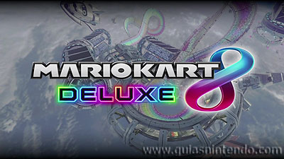
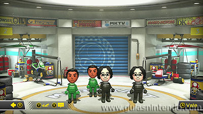

MENU 1
Mario Kart 8 Deluxe es la última entrega del famoso y divertido juego de carreras de Nintendo.
Es una versión ampliada de Mario Kart 8 para Wii U que contiene el juego completo junto con su contenido descargable y mayor definición de imagen. En esta edición para Nintendo Switch podrás jugar a Mario Kart en Alta Definición tanto en tu TV como en el modo portátil por primera vez en la saga.
También puedes jugar en Multijugador con hasta tres amigos más usando los Joy-Con de manera individual. En este caso la pantalla se dividirá para mostrar a todos los corredores (en dos mitades si son dos jugadores o en tres cuartos si son más). Si dispones de amigos con la consola Nintendo Switch, podrás usar el modo inalámbrico para conectar las consolas y jugar varios jugadores cada uno en su pantalla (hasta 8; con ocho consolas y cada una con su juego en el modo portátil o con 4 consolas y pantallas divididas en los modos sobremesa o tabletop).
